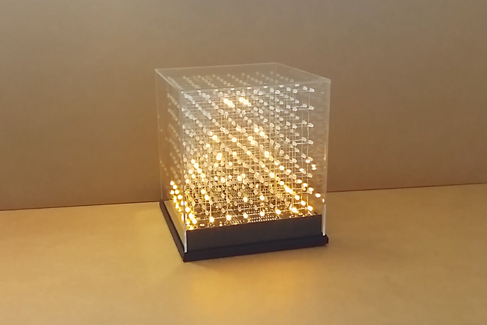
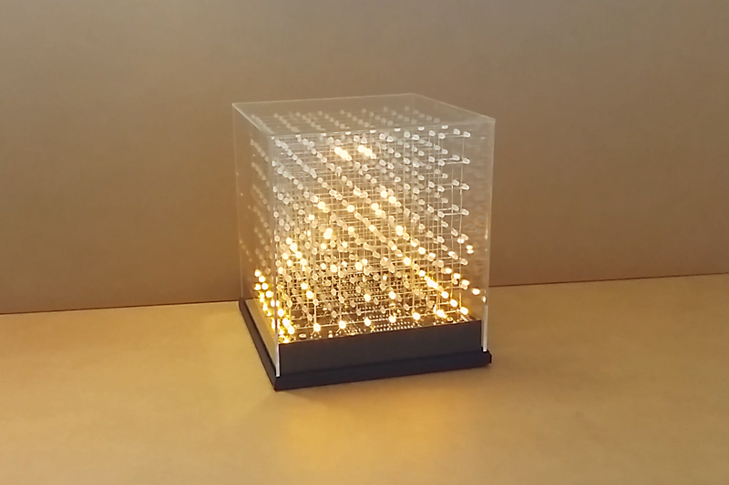

{01}
room6x8
RM6x8 is a 48meter square exhibition co-founded by Gallery Sohe and Spurs gallery.
Located in Chaoyang, Beijing the small space presents a interesting and unique challenges for contemporary artists and designs alike as it forces them to present their work within the restictive limits of the 6x8 room.
{02}
Plant Machete
Plant Machete is an installation exhibited at the science gallery in Melbourne.
Using an Ardunino the artist David Bowen has given the plant the agency to strike back to defend itself against scary humans.
Amanda Ghassaei a designer and engineer out of San Francisco created a Persistence of Vision Wand using an Arduino Uni.
Intially when looking at the project it seems that the wand is just producing random flickering light, however, when a long exposure camera is set up you get to a message appear.
{04}
56-60-65
{05}
Impolitus
"The mirror that won't let you be vain. if you get closer to see your reflection it will turn the other way".
Impolitus is an interactive installations created through the use of Ardunino.
{06}
JolliCube
The JolliCube are LED cubes makes up of small LED light set up in a grid formate.
The cubes themselves are made up of Ardunino components thus making it more assessable and easy for other indivduals to build their own.
{08}
Kentucky Perfect
Kentucky perfect is an installation piece that was exhibited at the Science Gallery in Melbounre.
The installation is a robot lawn mower that continuously mows a small section of grass ensure that the grass is kept at the perfect length.
{07}
Murder Machine
This installations is an experiemental infographic machine that depicts the frequency of murders in Venezuela through hypothetical murder reports.
These reports are then printed onto a physical receipt as well as posted to twitter, highlighting the 'uncertainity of life in the country'.
{09}
Twomuch
Twomuch is a digital design studio operating out of London and Vancouver.
Founded by Benjamin Chan and Malone the studio covers a wide variety of design fields from 3D animation to webdesign and Brand identity.